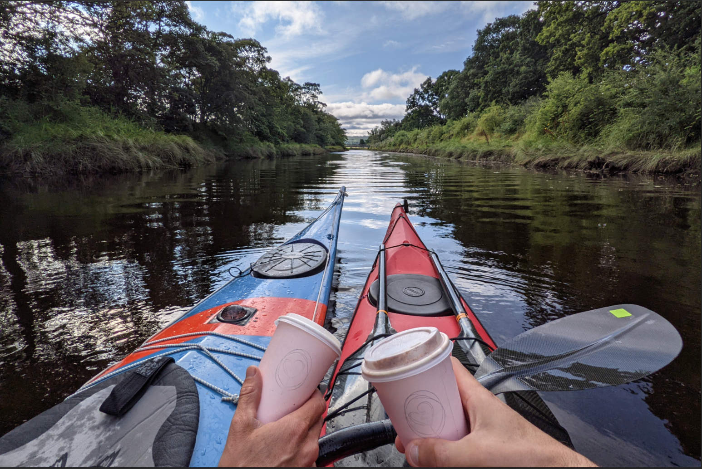

Dingwall to Cromarty
There are many ways to go from Dingwall to Cromarty. Except for walking, we tried most of them this summer
By kayak (6 hours)
This paddle in the Cromarty firth is about 30 km, which is far, but we figured with an outgoing tide it should be doable. We started quite early with a mocha (Leigh) and chai latte (Annette) from a super cute coffee place our neighbours had alerted us of. The owner is Canadian, so when we went scouting the place out a few days earlier we had chatted a bit about living in Scotland. Dingwall (which name dates back from the Viking days) has a canal that connects the town to the firth. It was built in 1819 but not really a commercial success, so abandoned in the 1880s when a railway provided a better connection to the town. The canal is still there, but even by kayak it can be only paddled at higher tides, which was not a problem for us because we were leaving at high tide anyway to not have to paddle against an upcoming tide in the firth. Paddling out of the canal was fun, would the wooden structures that we saw at the end of the canal really be 200 years old?

Not only did we have an increasing current in the back, also a westerly wind was providing some surf waves directly from the back, to make our progress better. It almost wasn’t worth paddling. In no time we floated our way to the bridge, and the water was low enough that it was not a problem to pass under it, as we didn't know how much space there is between water and bridge at absolute high tide.
The next destination was Invergordon. This town is the main access point for all the activities in the Cromarty firth. The firth is very deep, and it housed the UK’s navy at some point in history before the navy moved up to the Scapa Flow in the Orkneys (see earlier post). Now, the Cromarty Firth harbours the port for cruise ships that want to visit the north of Scotland, and the firth is a main base where oil rigs are being taken apart or refurbished. I believe I counted 15 of them. The harbour master makes sure all boat traffic to and from the oil rigs and other happens without accidents, and while listening in on him with our VHF radio we heard an almost continuous string of messages of boats discussing their plans and activities with the harbour master. To the south of the firth the water is shallow and this was far away from the channel marked by buoys that the commercial boats were using, so it was easy for us to stay out of the way and paddle there instead. We had a nice lunch while listening to the harbour masters activities, and crossed back into our safe area to continue our trip to Cromarty, using the still receding tide.

We made it to Cromarty at low tide, and could look back on a successful trip, helped by the wind and tidal conditions. Cromarty has a Dutch cheese store, so while we started the trip with some Canadian interaction, we ended with some Dutch. A fitting trip for us. As we snacked on some treats from the Cromarty Bakery, we watched an oil platform being towed out of the firth. Live entertainment!
By public transport (2 hours)
After the paddle, it was time to go back home. But, our car was in Dingwall. Oh, those fun shuttle arrangements when on a kayak trip. The bus timetables indicated a bus between Cromarty and Dingwall does exist, but the timetables proved too complex for us to understand. Google Maps’ public transport section indicated that the bus would bring you back to Inverness, from where you take the bus to Dingwall. We decided to take the bus to where it goes left to Inverness and Dingwall would be to the right. We had already stashed a bike in the morning while driving with the kayaks on the roof to Dingwall, intending to bike the last hour to Dingwall from there, instead of taking the detour to Inverness. The bus went through every village on the Black Isle and was full of school kids. The bus driver gave me a ticket for a kid as I discovered later, which I take it is due to me looking so young, but it could also been that he got so confused by where I wanted to get out of the bus that he forgot to switch the ticket machine to adult. The ride was long, and at one point I could even see our house on the other side of the Moray firth. But, eventually it stopped at my bike, and I could bike back to the car, which brings us to the next type of transport.
By car (35 minutes)
Easy peasy, definitely the quickest and most societally accepted way! But also the least fun. Leigh and the kayaks were patiently waiting (for already 2.5 hours now) and Leigh had ordered one of Cromarty's great wood fired pizzas, so there was a yummy treat waiting for me to get back to.
By bike (3.5 hours, full loop 7 hours)
We left early in the morning to start with another cup of mocha/chai latte from the Canadian guy in Dingwall.
This time, we would do a loop around the Cromarty firth on our tandem bike, starting near Dingwall, and having a pizza for lunch in Cromarty. Up was on the north side of the Cromarty firth. The official UK biking route 1 passes through, and there is no need to be on the main highway A9 up north. The route has a surprising amount of trees, and we even passed 2 lumber mills. We kept up for a while with 2 road bikers, until we diverted to Invergorden. Here we admired the murals that we hadn’t noticed during our kayak trip. The route is quite flat, and no wind made for a relaxed and easy day.
To get to Cromarty, you take a ferry from Nigg, this is the cutest little thing; room for 2 cars if you’re okay with your car hanging half outside of the ferry. Even though the tandem bike is quite long, it fit safely on the ferry. Nigg has an industrial park that deals with wind energy; large wind turbines could be seen waiting to be shipped out to the offshore wind farms. The ferry ride was short, and unfortunately no dolphins could be seen; they often hang around in this area. We did see a skiff, a wooden rowing boat, going around the shore. These skiffs are usually community projects. There is a standard plan on how to build one, and different coastal villages race against each other.
In Cromarty we had another great pizza for lunch while looking out over the harbour, then cruised back to our car along a beautifully straight road following the south shore of the Cromarty Firth. The road felt like it kept going up and up and up. Or, were our legs just getting tired? Probably a bit of both. The last hour we were accompanied by some rain, but it was too warm to put rain gear on, so really, no complaints there. We feel like we thoroughly explored “Dingwall to Cromarty”.